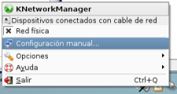
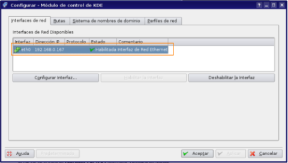
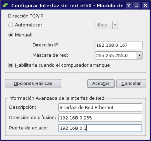
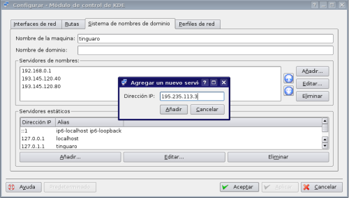

Configuración de red
Conectando mediante una red cableada:
Configurar tu conexión a internet no debería suponer demasiados problemas si dispones de una conexión ADSL o por Cable mediante router o cablemodem. Si utilizas otro tipo de conexión, mira la página de soporte, donde encontrarás páginas que pueden contener la información que necesitas, o pedir ayuda vía foros o chat. En la imagen puedes ver algunos ejemplos de cablemodems y routers:

Normalmente, si dispones de un cable modem o un router adsl con soporte para autoconfiguración (es lo más común), la configuración por defecto de Bardinux debería permitirte conectarte a internet sin más esfuerzo.
Si no es el caso, los pasos para configurar manualmente tu conexión son los siguientes:
1. Haz clic en el icono de conexiones de red y selecciona "configuración manual"


2. Haz clic donde pone 'Interfaz de red Ethernet', y pulsa el botón 'Configurar Interfaz'

3. Elige la opción 'manual', pulsa el botón 'avanzado' y rellena los campos 'dirección ip', 'máscara de red' (normalmente 255.255.255.0) y 'puerta de enlace'. La dirección IP y la puerta de enlace son cuatro dígitos separados por tres puntos, de la forma (XXX.XXX.XXX.XXX). Marca también la opción 'Habilitarla cuando el ordenador arranque', y pulsa 'Aceptar'.

4. Finalmente, selecciona la pestaña 'Sistema de nombres de dominio' e introduce la dirección del servidor de nombres, o DNS (Este dato también debería facilitártelo tu proveedor de internet. Son también cuatro números separados por tres puntos, por ejemplo '195.235.113.3').

5. Pulsa 'Añadir', luego 'Aplicar' y luego 'Aceptar'. Tu red debería estar configurada y lista para conectarte a internet. En caso contrario, mira la sección de soporte para ver donde encontrar más información.
Principales aplicaciones
 Mozilla Firefox
Mozilla Firefox
Navegador web predeterminado en Bardinux
 Mozilla Thunderbird
Mozilla Thunderbird
Thunderbird es un cliente de correo electrónico POP3
 Kopete
Kopete
Kopete es un cliente de mensajería instantánea, que permite conectarse a una gran variedad de servicios (Jabber, MSN Messenger, Google Talk, etc)
Configuración de Internet
 Configuración de red
Configuración de red
Aquí encontrarás información sobre como conectarte a otros ordenadores o a Internet, mediante una tarjeta y un cable red.
 Configuración de red inalámbrica
Configuración de red inalámbrica
Aquí encontrarás información sobre como conectarte a otros ordenadores o a Internet, mediante una conexión inalámbrica (Wi-fi).